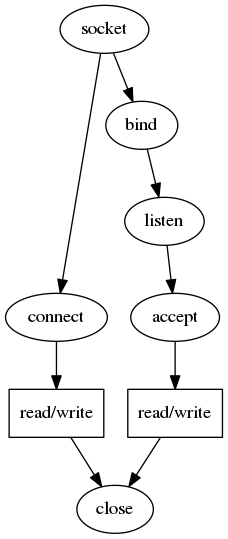

Ch. 15 Sockets API

We directly programming with struct socket, bypassing the proc and file structs.
To step through the code, run gdb objs/test_init, then set break points on socreate, sobind, etc.
socket()
int socket(int domain, int type, int protocol);
int sockfd = socket(AF_INET, SOCK_STREAM, 0);
socket(AF_INET, SOCK_STREAM, 0)
-> syscall -> socket
-> socreate(AF_INET, aso = &so, SOCK_STREAM, 0)
struct protosw *prp = pffindtype(AF_INET, SOCK_STREAM);
struct socket *so = malloc();
prp->pr_usrreq(so, PRU_ATTACH, ...) -> tcp_usrreq(so, PRU_ATTACH, ...)
-> tcp_attach(so)
-> soreserve(so, tcp_sendspace=8192, tcp_recvspace=8192)
-> sbreserve(&so->so_snd, tcp_sendspace=8192)
-> sbreserve(&so->so_rcv, tcp_recvspace=8192)
-> in_pcballoc(so, &tcb)
-> struct inpcb *inp = sotoinpcb(so)
-> struct tcpcb *tp = tcp_newtcpcb(inp)
-> tp->t_state = TCPS_CLOSED;
*aso = so
connect()
connect() // connect to 127.0.0.1:1234
-> syscall -> connect
-> soconnect(struct socket *so, struct mbuf *nam)
so->so_proto->pr_usrreq(so, PRU_CONNECT, NULL, nam, NULL) -> tcp_usrreq(so, PRU_CONNECT, ...)
if (inp->inp_lport == 0) in_pcbbind(inp, NULL) // common unless bind() already
-> in_pcbconnect(inp, nam)
-> rtalloc
tp->t_template = tcp_template(tp)
soisconnecting(so)
tp->t_state = TCPS_SYN_SENT;
-> tcp_sendseqinit(tp)
-> tcp_output(tp) // send SYN
-> in_cksum()
-> ip_output()
-> in_cksum()
-> ifp->if_output() -> looutput()
bind()
bind() // bind on 0.0.0.0:1234
-> syscall -> bind
-> sobind(struct socket *so, struct mbuf *nam)
so->so_proto->pr_usrreq(so, PRU_BIND, NULL, nam, NULL) -> tcp_usrreq(so, PRU_BIND, ...)
-> in_pcbbind(inp, nam)
listen()
listen() // backlog = 5
-> syscall -> listen
-> solisten(struct socket *so, int backlog)
so->so_proto->pr_usrreq)(so, PRU_LISTEN, ...) -> tcp_usrreq(so, PRU_LISTEN, ...)
if (inp->inp_lport == 0) in_pcbbind(inp, NULL) // uncommon, because bind() already
tp->t_state = TCPS_LISTEN;
so->so_options |= SO_ACCEPTCONN
so->so_qlimit = min(backlog, SOMAXCONN)